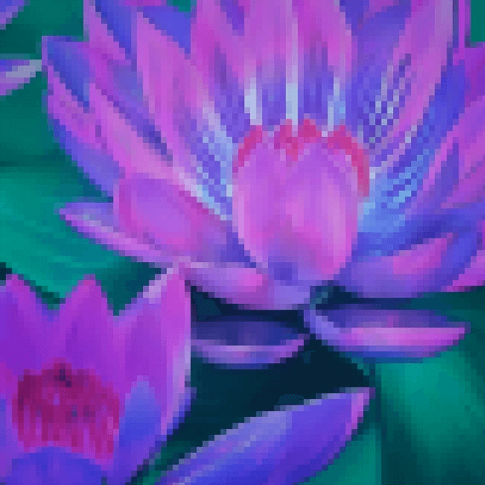
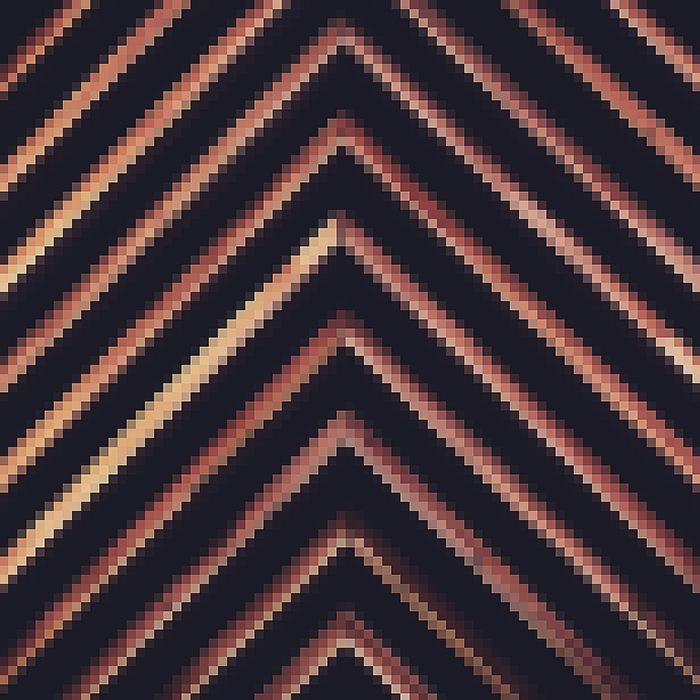
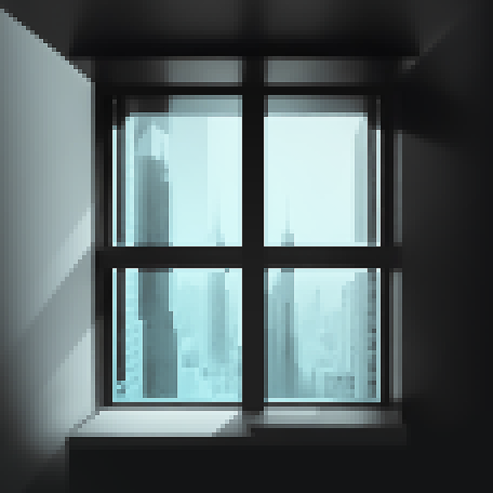
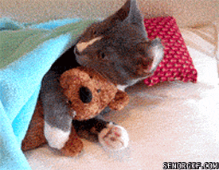
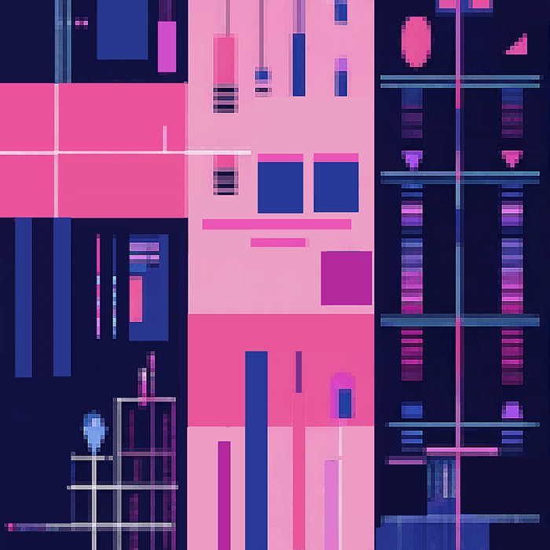
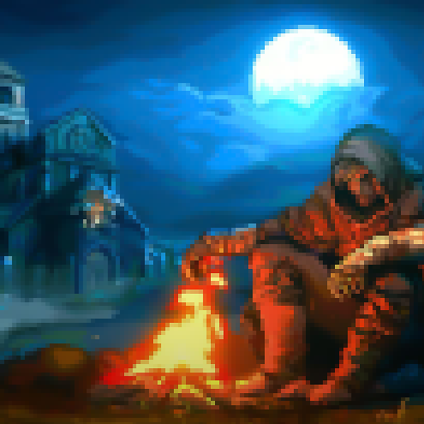
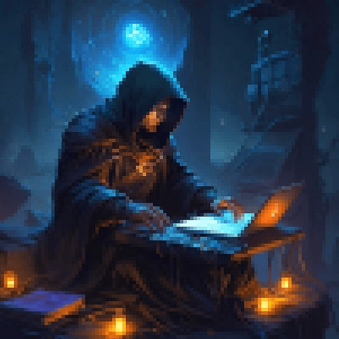

Это было самое начало пути. На этом этапе важно было
проникнуться основами и настроиться на учёбу. И, возможно,
подумать, как новые знания могут повлиять на ваше будущее.
Мы не знаем, что это. Если бы мы знали что это.
1 спринт: Я — чистый лист
</HTML>

На первых этапах мы работали со страхами и сомнениями, которые
часто испытывают новички. Один из них — страх перед чистым
листом. Это, конечно же, намного сложнее, чем боязнь куска
бумаги. Часто за этим ощущением скрываются более глубокие
вопросы: с чего начать? а вдруг будет слишком сложно? что, если
я не справлюсь?
Первый проект был похож на квест-головоломкку.
1 спринт: А если не получится?
<CSS>

Первый проект — позади! Но это всё ещё самое начало пути.
Радость могла быстро померкнуть и смениться ожиданием провала.
Или вы, наоборот, могли вдохновиться успехами и поверить в себя.
Славный промежуток между первой и второй, когда времени хватило
и прочитать про софт-скиллы, и закрепить теорию еще одной
страничкой. Долго пыталась унять паранойю после знакомства с
Perfect Pixel.
2 спринт: Погоня за идеалом
<desigions>

На этом этапе вы уже достаточно разбирались в основах вёрстки,
чтобы понять, как много ещё впереди. Вы могли попытаться
погнаться за идеалом и понять, что он недостижим. А, может, вы
вовсе и не подвержены перфекционизму и вместо того, чтобы
сделать идеально, старались просто сделать.
Это был бой с прыгающими кнопками, они уворачивались, как могли.
2 спринт: О тех, кто рядом
<support>

Всё это время вы были не одиноки (хотя, возможно, иногда и
чувствовали, что одни против целого мира). Вас окружали
одногруппники, команда сопровождения и просто близкие люди,
которым можно пожаловаться, если очередной макет просто так не
поддавался. Осваивать что-то новое легче, когда рядом есть
единомышленники, не правда ли?
Мне помогает мой дядя, что ни спроси, он всегда знает ответ.
Великого терпения человек.
Ревьюеры пишут, что работа сделана хорошо, хотя под спойлером
20+ ошибок. Это так мило <3
3 спринт: Обходные стратегии
<grid>

На этом курсе вы постоянно решали разные задачи. В какой-то
момент вам могло показаться, что решения просто иссякли. Значит,
пришло время посмотреть на задачу под другим углом.
После длинного перерыва на праздники было реально сложно
сосредоточиться. Не успела прочитать доп. статьи из теории и
тему из софт-скиллов про стресс. Зря.
Зато какой грид в проекте красивый получился.
3 спринт: Когда опускаются руки
<lifes-style: none;>

Во время учёбы часто возникает чувство, когда не знаешь, за что
хвататься. Вроде и проектную пора сдавать, и задачи хочется
порешать, и в теории получше разобраться, и жизнь не забыть
пожить. В такие моменты очень нужна концентрация. Вспомните,
откуда вы её черпали.
10-часовые видео с саундтреком из Скайрима и лофи-битные ремиксы
на музыку из Diablo II.
«Сейчас я здесь»
<experience>

Сейчас вы уже очень много знаете о вёрстке. Но это только
начало. Во-первых, впереди ещё много материала про «красотищу».
Во-вторых, с окончанием курса учёба не заканчивается. Вёрстка —
это целый мир. И этот мир постоянно меняется. Познать его
полностью не получится, но это тот случай, когда важен сам
процесс познания. Ведь часто путь — и есть результат.
Меня пугает грядущий спринт про Java Script. Я с версткой-то сон
потеряла, а дальше все совсем сложно будет. Страшно, очень
страшно. Если бы мы знали что это...